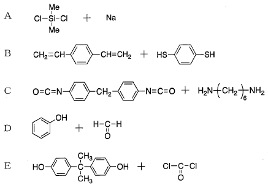

令和6年度 問21 高分子化学
次のA〜Eの重合反応を形式に分類した場合、最も適切な組み合わせはどれか。

| 選択肢 | 重付加 | 付加縮合 | 縮合重合 | |
|---|---|---|---|---|
|
①
|
B, C | A | D, E | |
|
②
|
B, C | D | A, E | |
|
③
|
A, B | C | D, E | |
|
④
|
A, E | D | B, C | |
|
⑤
|
C, D | A, B | E | |
正答
② 重付加：B, C、付加縮合：D、縮合重合：A, E
正答は2番です。
高分子の生成反応は、反応機構や形式によって以下のように分類されます。
A：縮合重合 (Condensation Polymerization)
ジクロロジメチルシランとナトリウムの反応（ウルツ型カップリング）により、NaClを脱離しながらポリシランが生成します。低分子が脱離するため縮合重合に分類されます。
B：重付加 (Polyaddition)
ジビニルベンゼンとジチオールの反応です。SH基が不飽和結合へ加重付加することで進行します。副生成物の脱離がないため重付加です。
C：重付加 (Polyaddition)
ジイソシアネートとジアミンの反応によりポリ尿素が生成します。これも副生成物の脱離がない付加反応が繰り返されるため重付加です。
D：付加縮合 (Addition-Condensation)
フェノールとホルムアルデヒドの反応です。ホルムアルデヒドがフェノールに付加してメチロール基を形成し、それが縮合してメチレン結合を作る過程を繰り返すため付加縮合と呼ばれます。
E：縮合重合 (Condensation Polymerization)
ビスフェノールAとホスゲンの界面重合によりポリカーボネートが生成します。この際、HClを脱離しながら進行するため縮合重合です。